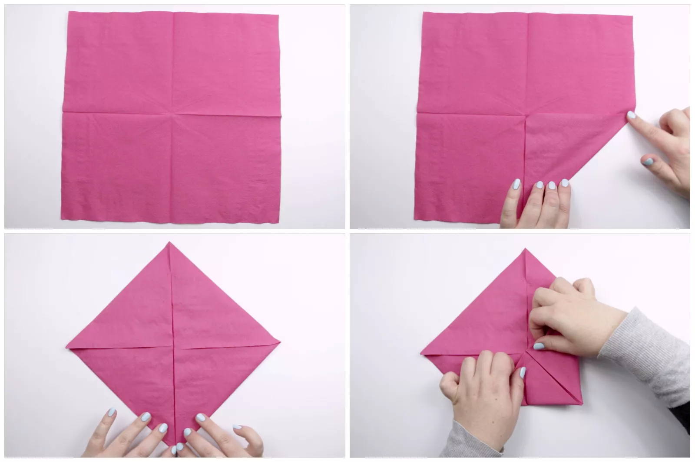
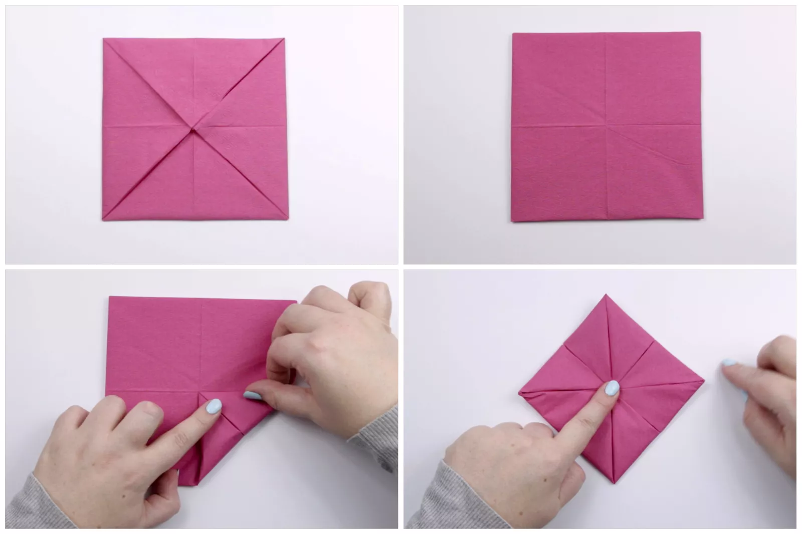
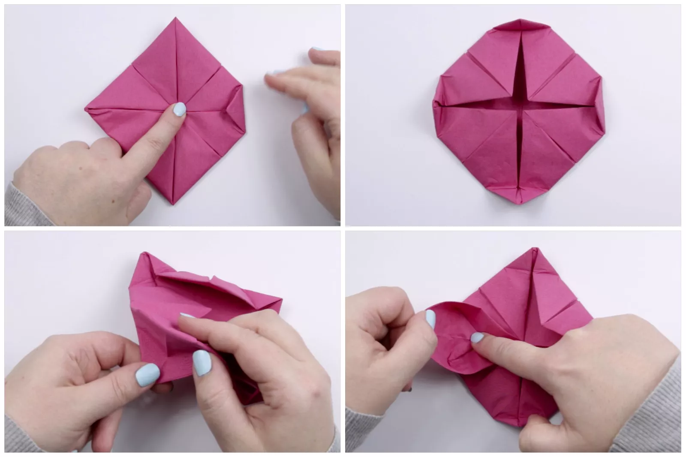
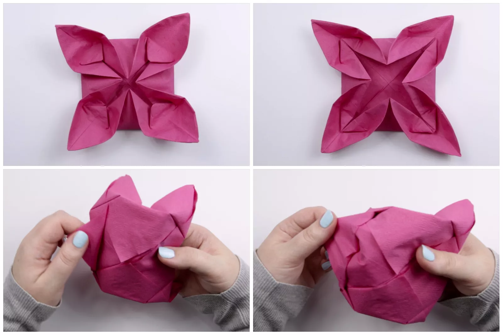
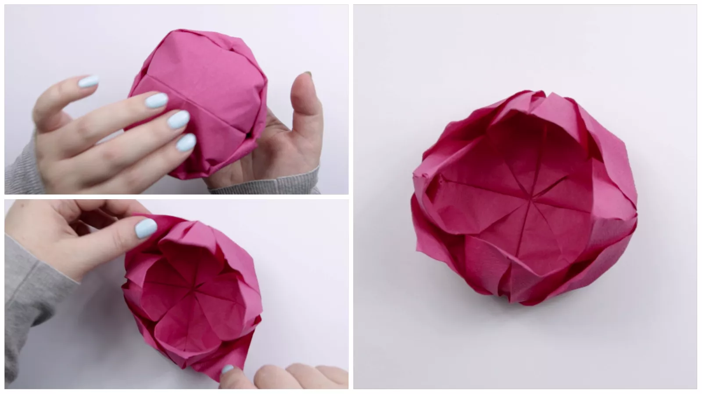

How to Make an Origami Napkin Lotus
These origami lotus flowers are a beautiful way to decorate a
tablescape for a special occasion. Paper napkins provide
an inexpensive option and add pops of color to your table spread.
You can use these lotus napkins as little bowls in which to serve food
like buns, cupcakes, or anything that will fit inside the lotus.
Places them in the center of each plate as a functional decoration.
For an even more intricate design, make another lotus from a smaller
napkin of a different color and pop it inside the larger one. Once
you get the hang of the lotus, try making an origami rose napkin.
You can also teach your guests how to make these origami flowers as
a fun activity. Using normal paper for these, rather than napkins,
works fine. Just make sure the paper you start with is square.
Start with your napkin unfolded. Hopefully, you have some crisp central
creases already, but if not, create a vertical crease and horizontal
crease by folding the napkin in half each way and unfolding.
Fold one of the corners to the middle, aligning it with the vertical
crease—even if you cannot align it perfectly, just do your best.
Fold the rest of the corners to the middle. Make sure that all
the corners are sharp without blunt ends.
Fold the corners to the middle for a second time; it's a good idea
to do them two at a time to better align them.

Flatten (or press) the napkin at this point, making sure
the corners are as sharp as possible and not blunt.
Flip the napkin over to the other side.
Fold a corner to the middle.
Fold the rest of the corners to the middle,
creasing well. Your napkin will not stay
like this so it's okay to hold it in place.

Fold in one of the corners a little (about a third of the way in).
Fold the rest of the corners—try to make them all the same.
While holding onto a newly folded corner, grab the layer
of paper from the back and fold it to the front, over the top of the folded corner.
Press down on the folded corner while you pull on the "petal."

Do the same with the other three corners as you did in Step 3.
Next, flip the corners of the petals to face outwards.
Now you can peel the last layer of petals from the back to the front.
If there are some layers of paper that seem to be under the others, make sure you peel those last.

Straighten out the origami napkin lotus by pulling the petals
to the position you like them the best.
You can curl the petals back out a little, making a more open
lotus, or leave them all wrapped forward and slightly inward,
making it look and feel more like a bowl.


Our Purpose Is To Sustainably Make the Pleasure and Benefits of sports Accessible to the Many.
Copyright-2021 Abdul Haq